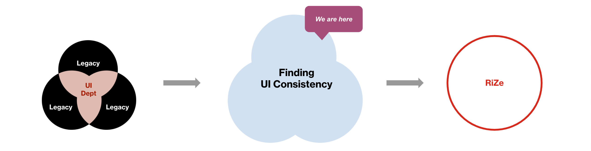
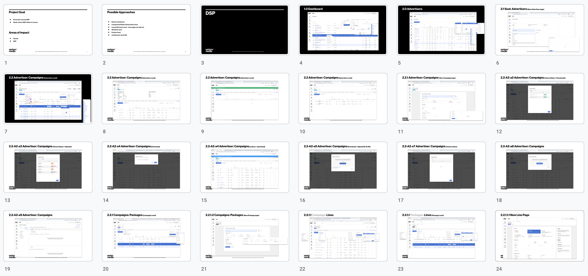
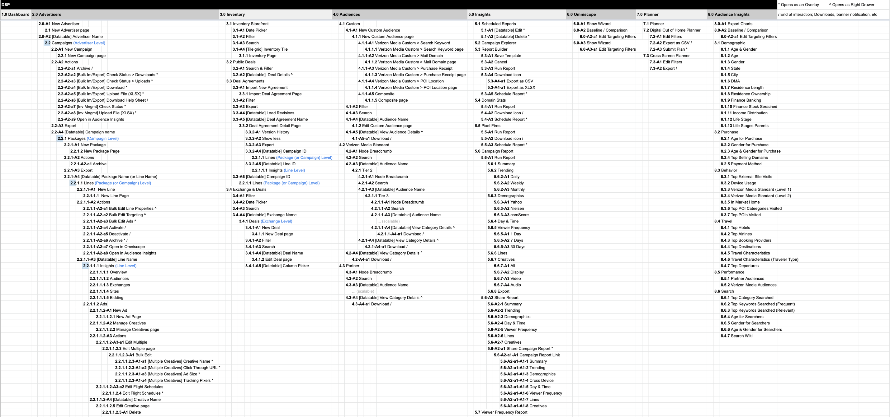
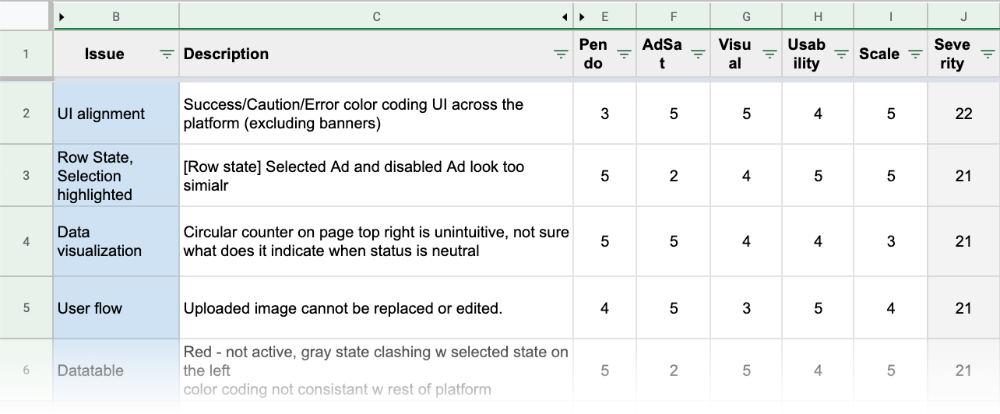
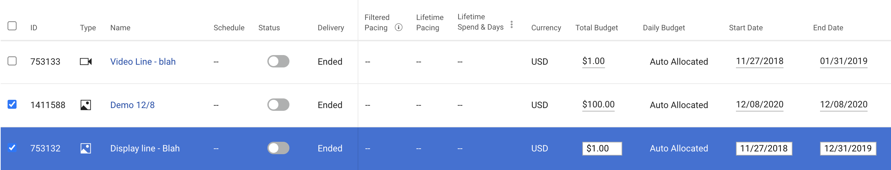
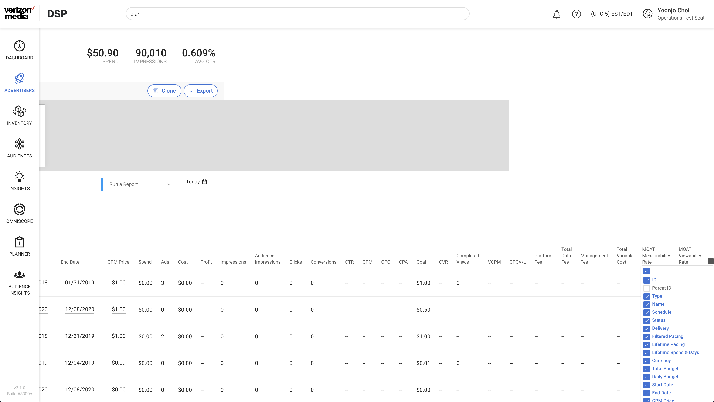
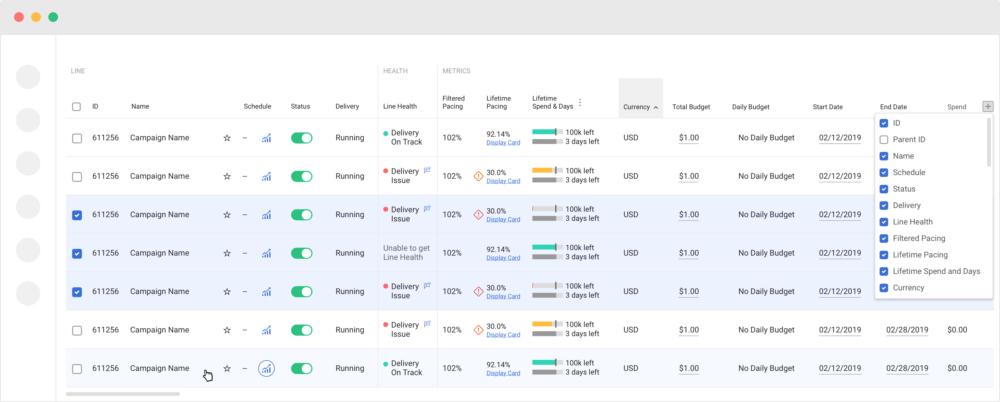

Product Designers: Yoonjo Choi Duration: 2020~Current Tools: Sketch, Invision
Current DSP platform has significant UI debt due to several mergers, rapid growth and feature teams without design support. An audit to capture the many UI/UX mishaps and inconsistencies was a necessity in order to plan for a smooth transition to the new visual styles and components.

Audit: Total 360 pages

Information Architecture

Priority List

Priority to address ranked by severity. Severeness is measured on 5 dimensions; Usage Data, Satisfaction Report (internal score), Visual, Usability and Scale.



Data-tables make up more than 50% of the UI and amending this component elevates the platform in cohesiveness to a great degree. Additionally, addressing inconsistency further paves the way to easy adoption of the up-coming new style guide. UI systems and inconsistency is an ongoing effort and will always be a topic to keep an eye out for; not just as an individual but for the team of UX designers and UI engineers alike. It is important to communicate the efforts and direction with the team and bring awareness to spotting and addressing inconsistencies.